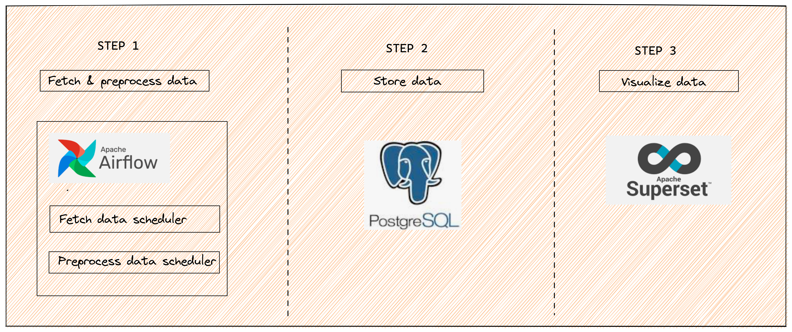
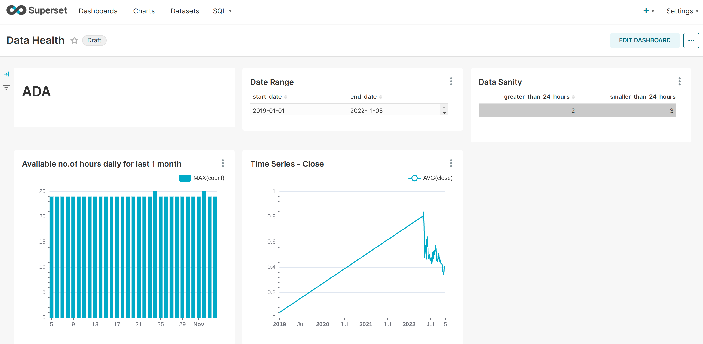

The Data You Know; The Story You Don’t
- toc: true
- badges: true
- comments: true
- categories: [jupyter]
- image: images/chart-preview.png
TL;DR
In this blogpost I talk about a data monitoring system that I built to monitor the quality and availibility of data in real time. The system uses Airflow to schedule jobs, PostgreSQL to store data and Superset to visualize the data and monitor its quality.
Through this system I monitor the data availability, quality, consistency, and drift. This system enables me to take actions like - identifying discrepancies in the ETL pipeline, if expected data is missing, anomaly in the data that is causing the business objective to fail, and many more.
Outline
I am assuming that you have Docker installed in your system. If not installed, follow the instructions at
We will:
Install Airflow, PostgreSQL and Superset with Docker.
Fetch data, preprocess and push to PostgreSQL using Airflow.
Build dashboards in Superset to monitor and visualize the data.
High level architecture in a diagram

Setting up PostgreSQL, Airflow and Superset
To setup Airflow using Docker:
Download Airflow docker-compose
curl -LfO 'https://airflow.apache.org/docs/apache-airflow/2.4.1/docker-compose.yaml'Create mount directories for Docker
mkdir -p ./dags ./logs ./pluginsSave AIRFLOW_UID in .env
echo -e "AIRFLOW_UID=$(id -u)" > .envInitialize the database
docker-compose up airflow-initStart all airflow services
docker-compose upTo setup PostgreSQL using Docker:
Pull postgres Docker images
docker pull postgresRun postgres container
docker run --name postgresql -e POSTGRES_USER=<username> -e POSTGRES_PASSWORD=<password> -p 5432:5432 -v /data:/var/lib/postgresql/data -d postgres- postgresql is the name of the Docker Container. -e POSTGRES_USER is the parameter that sets a unique username to the Postgres database. -e POSTGRES_PASSWORD is the parameter that allows you to set the password of the Postgres database. -p 5432:5432 is the parameter that establishes a connection between the Host Port and Docker Container Port. In this case, both ports are given as 5432, which indicates requests sent to the Host Ports will automatically redirect to the Docker Container Port. In addition, 5432 is also the same port where PostgreSQL will be accepting requests from the client. -v is the parameter that synchronizes the Postgres data with the local folder. This ensures that Postgres data will be safely present within the Home Directory even if the Docker Container is terminated. -d is the parameter that runs the Docker Container in the detached mode, i.e., in the background. If you accidentally close or terminate the Command Prompt, the Docker Container will still run in the background. postgres is the name of the Docker image that was previously downloaded to run the Docker Container.
To setup Superset using Docker:
Clone the repository
git clone https://github.com/apache/superset.git
cd supersetRun superset
docker-compose -f docker-compose-non-dev.yml pull
docker-compose -f docker-compose-non-dev.yml upTo setup using setup.sh:
Clone the repo (https://github.com/Sharad30/data-monitoring-system) and run:
./setup.shHow do you schedule a task using Airflow?
Apache Airflow is an open-source platform for developing, scheduling, and monitoring batch-oriented workflows.
- Create a python module inside
dagsfolder. - Define a function that is executed as a task.
- Define a
DAGto schedule tasks. - Define a task using the function defined in step 2.
- Setup task dependencies.
The below steps ensure that you have an up and running job scheduled at regular intervals:
- Define a function to fetch data from the API or from S3 or any other source
def download_api_data():
print(f"Fetching data....")
response = requests.get(<API url>)
data = response.json()
print(f"Total number of data: {len(data)}")
json_object = json.dumps(data, indent=2)
with open(f"/tmp/pdl_{currency}_hourly.json", "w") as f:
f.write(json_object)
print(f"Finished downloading data.....")The above function fetches data from the API and then stores it as json file for further processing.
- Define a function to move downloaded data(json, csv etc.) to PostgreSQL
def move_pdl_data_to_postgres(**kwargs):
currency = kwargs["currency"]
print(f"Populating for {currency} has started")
with open(f"/tmp/pdl_{currency}_hourly.json") as f:
data = json.load(f)
df = pd.DataFrame(data)
# Define your preprocessing steps here like typecasting a column according to the Postgresql schema and any other steps specific to your use case
print("All values created, starting the push to db")
df.to_sql(name="<name-of-sql-table>", con=engine, index=False, if_exists="append", chunksize=300)In the above function we load the json data downloaded in step 1 inside a dataframe and then move it to PostgreSQL table, defined in our con parameter of to_sql function.
- Define a
DAG
- DAG object is needed to define how we are going to schedule our various tasks.
- Here we pass a string that defines the dag_id, which serves as a unique identifier for your DAG and also description.
- We also schedule a DAG using
schedule_intervalparameter to run it at hourly frequency and also provide start_date of the DAG. - Below is an example of the DAG definition:
dag = DAG(
dag_id="data-migration",
description="Daily data monitoring pipeline",
schedule_interval="0 * * * *",
start_date=datetime(2022, 10, 17),
)- Define
PythonOperator
- Operators are tasks that define a unit of work to be done.
- There are manny different kind of operators that you can play around with in Airflow. But we will stick to
PythonOperator, which takes python function as a parameter. - Here we define the
task_id,python_callableand above defineddagobject. - Below is how we define the
PythonOperatorobject
PythonOperator(
task_id=f"download_json",
python_callable=download_json,
dag=dag,
)- Setup task dependencies
Lets say we have 2 PythonOperator defined as 2 tasks and one task is dependent on the other. In our case we first fetch the data from API and then push the data to PostgreSQL. So setting up task dependency kind of becomes and it is defined by using >> operator as follows:
task1 >> task2Here the Airflow DAG knows that it has to first finish running the task1 and then move on to task2. Any failure in task1 will result in termination of the job.
What is the Airflow UI going to look like?
The above UI can be accessed after Airflow login and navigating as follows: <DAG-name> > Graph.
The Graph shows you the various tasks that are scheduled to run and each row defines multiple tasks and how each one is dependent on the other i.e Task move_pdl_data_to_postgres_ADA is dependent on download_pdl_json_ADA and hence has to be completed first.
The subsequent rows follow a similar pattern and here we have demonstrated multiple different jobs scheduled inside a single DAG, where each job does the same thing as other, but for different type of data i.e for different bitcoin currencies in our scenario.
How to visualize the raw data in Apache Superset?

- Superset is a data exploration and visualization platform and we are going to leverage it to use it as our frontend for monitoring the data we move to the PostgreSQL at regular intervals.
- As seen in the above example dashboard we are doing some sanity check and checking the trend for a bitcoin currency.
- So playing around with visualizations specific to your data and problem statement is straight forward in Superset and it comes with a bunch of features.
What next?
This task can be further expanded in various aspects each from PostgreSQl, Airflow and Superset perspective, by adding more sources of information that we want to monitor in real time and keep adding more tables to our PostgreSQL database, schedule more DAGs in our Airflow container and add more dashboards monitoring the nature of different data.